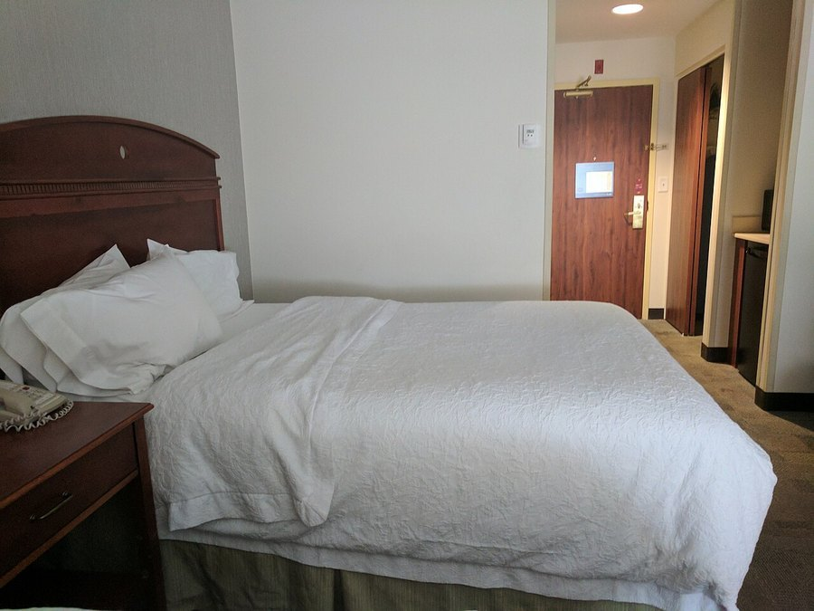

Best Bedroom Temperature for Sleep: What's the Ideal Setting?
The thermostat is one of the few sleep variables you can fix in under a minute. Here's the range that actually matches how your body cools down for sleep, and why it works.

Key takeaways
- 65 to 68°F (18 to 20°C) is the range most sleep experts point to for the average healthy adult.
- A cooler room helps core body temperature drop, part of the biological trigger for sleep onset.
- Too hot is worse than too cold for most people; above 75°F sleep quality drops consistently.
- Age, hormones and personal preference shift the ideal number somewhat in either direction.
- Temperature is one lever among several, not a fix for a chaotic schedule or late caffeine on its own.
The best bedroom temperature for sleep is roughly 65 to 68°F (18 to 20°C) for most healthy adults. That range supports the natural overnight drop in core body temperature that helps trigger and maintain sleep. Going much warmer than 75°F or much cooler than 60°F tends to fragment sleep for most people, though personal tolerance varies by a few degrees either way.
The number itself is simple. The reason it works, and what to do when a shared bedroom or a hot climate makes the "ideal" hard to hit, is worth a closer look.
Why does temperature affect sleep in the first place?
Core body temperature follows a daily rhythm, rising during waking hours and dropping in the evening as part of the circadian cycle that governs sleep timing. That temperature drop isn't just a side effect of lying still; it's part of the biological signal that helps trigger sleep onset and supports staying asleep through the night. A cool room makes it easier for the body to shed heat and complete that drop. A warm room works against it, keeping core temperature elevated when it's supposed to be falling.
What's the actual ideal range for most adults?
Most sleep researchers and organizations converge on roughly 65 to 68°F (about 18 to 20°C) as the sweet spot for healthy adults in typical bedding. This isn't a hard line; comfortable sleep has been reported anywhere from about 60 to 70°F depending on the person, their bedding, sleepwear and how their body regulates heat. It's a starting point to test, not a number to chase with obsessive precision.
| Temperature range | Typical effect on sleep |
|---|---|
| Below 60°F (15°C) | Harder to fall asleep; waking up cold |
| 65-68°F (18-20°C) | Ideal range for most healthy adults |
| 69-74°F (21-23°C) | Tolerable for many, but not optimal |
| Above 75°F (24°C) | More restlessness, less deep and REM sleep |
Is being too hot worse than being too cold?
For most people, yes. Heat is one of the more consistently documented sleep disruptors in research, increasing restlessness and reducing the amount of deep and REM sleep across a night. Cold discomfort is usually easier to solve, more blankets, warmer sleepwear, than heat discomfort is, since you can only remove so many layers before you're just lying in a hot room. If you have to err in one direction while adjusting, erring slightly cooler tends to work out better.
Does the ideal temperature change with age?
Somewhat. Older adults often regulate body temperature less efficiently than younger adults and may sleep better in a room a couple of degrees warmer than the standard range. Infants and young children are a separate case entirely: they can't regulate their own body temperature as well as adults, and pediatric guidance generally recommends a warmer, more stable nursery temperature, typically in the high 60s to low 70s, rather than applying adult sleep-temperature advice directly to a baby's room.
Do hormones change what feels comfortable?
Yes, particularly for women. Hot flashes during perimenopause and menopause can make a room that felt fine for years suddenly feel too warm, and body temperature also shifts slightly across the menstrual cycle for some people. If overnight heat and waking up sweating have become a new pattern, our guide to hot flashes: natural relief options covers that connection directly, alongside bedroom-temperature adjustments that can help in the meantime.
What if two people in the same bed disagree on temperature?
This is common, and the thermostat usually isn't the best place to compromise. Setting the room toward the cooler end of comfortable for both people, then letting each person adjust with their own blanket weight, breathable sleepwear, or a cooling pillow or mattress topper on one side of the bed, tends to work better than negotiating a single number that satisfies neither person. A few targeted products solve more of this than a thermostat war does.
Do cooling mattresses and sheets actually make a difference?
They can help on the margins, especially for people who run hot overnight or live somewhere without reliable air conditioning. Breathable, moisture-wicking sheets and cooling mattress layers reduce the heat that builds up directly against the body, which matters even when the room air itself is at a reasonable temperature. They're a useful add-on, not a substitute for getting the actual room temperature into a workable range first.
What are simple ways to actually hit the ideal range?
- Set the thermostat to drop a degree or two in the evening, timed before your usual bedtime.
- Use a fan for airflow even in a cool room; moving air feels cooler than still air at the same temperature.
- Choose breathable bedding (cotton, linen, moisture-wicking blends) over heavy synthetic fabrics.
- Keep blinds or curtains closed during the day in warm climates to limit heat buildup before night.
- Layer blankets instead of relying on one heavy comforter, so you can adjust mid-night without changing the room temperature.
How much does this matter compared with other sleep habits?
It's genuinely one factor among several, not a cure-all. A perfectly cool room won't fully offset a wildly inconsistent bedtime, heavy late-day caffeine, or a stressful pre-bed routine. It's worth fixing specifically because it's cheap, fast and almost entirely within your control, unlike some of the other variables. Pairing it with the fuller set of habits in our sleep hygiene checklist covers more ground than temperature alone ever will.
Can a bad sleeping temperature affect how you feel the next day?
Yes. A night of fragmented, too-hot sleep tends to show up the next day as grogginess, slower thinking and a harder time concentrating, even if total time in bed looked normal. If that kind of morning fog feels familiar, our piece on why you wake up tired after 8 hours of sleep covers several other common causes worth ruling out alongside temperature.
Getting the room into roughly the 65 to 68°F range, then adjusting bedding and airflow to taste, covers the large majority of what temperature can do for sleep. From there, the rest comes down to the habits that surround it: a consistent schedule, a wind-down routine, and the discipline to actually use the cooler room once you've set it up.
Frequently asked questions
What temperature is too hot for sleeping?
Bedrooms above roughly 75°F (24°C) tend to disrupt sleep for most people, increasing restlessness and reducing time spent in deep and REM sleep. Everyone's tolerance varies somewhat, but heat is one of the most consistent sleep disruptors in research.
Can a bedroom be too cold for good sleep?
Yes. Below around 60°F (15°C), many people find it harder to fall asleep and more likely to wake up feeling cold, even under blankets. The ideal range balances a cool room with enough warmth under the covers, rather than pushing the thermostat as low as possible.
Does the best temperature change with age?
Somewhat. Older adults often regulate body temperature less efficiently and may prefer a slightly warmer room, while infants and young children need a warmer, more stable range than adults because they can't regulate their own temperature as well. General adult guidance doesn't automatically apply to babies.
Why does body temperature matter for falling asleep?
Core body temperature naturally drops in the evening as part of the circadian rhythm, and that drop is part of the biological signal that triggers sleep onset. A cooler room makes it easier for the body to shed heat and complete that drop; a hot room works against it.
Should men and women set the thermostat differently?
There's no single rule, but hormonal factors, including menopause-related hot flashes and some phases of the menstrual cycle, can shift comfortable sleeping temperature for women more than for men at certain times. Couples who disagree often do better solving it with bedding and breathable sleepwear than by fighting over the thermostat.
Does a cooling mattress or cooling sheets actually help?
They can help on the margins, especially for people who sleep hot or live somewhere without reliable air conditioning. They're a reasonable add-on, but they don't replace the core variable: the actual air temperature of the room.
How much does bedroom temperature really matter compared with other sleep habits?
It's one factor among several, alongside consistency, light exposure, caffeine and alcohol timing, and stress. Temperature is worth fixing because it's cheap and easy to control, but it won't fully offset a chaotic sleep schedule or heavy evening caffeine on its own.
Related: Sleep hygiene checklist · Why you wake up tired after 8 hours · Is 6 hours of sleep enough? · Hot flashes: natural relief